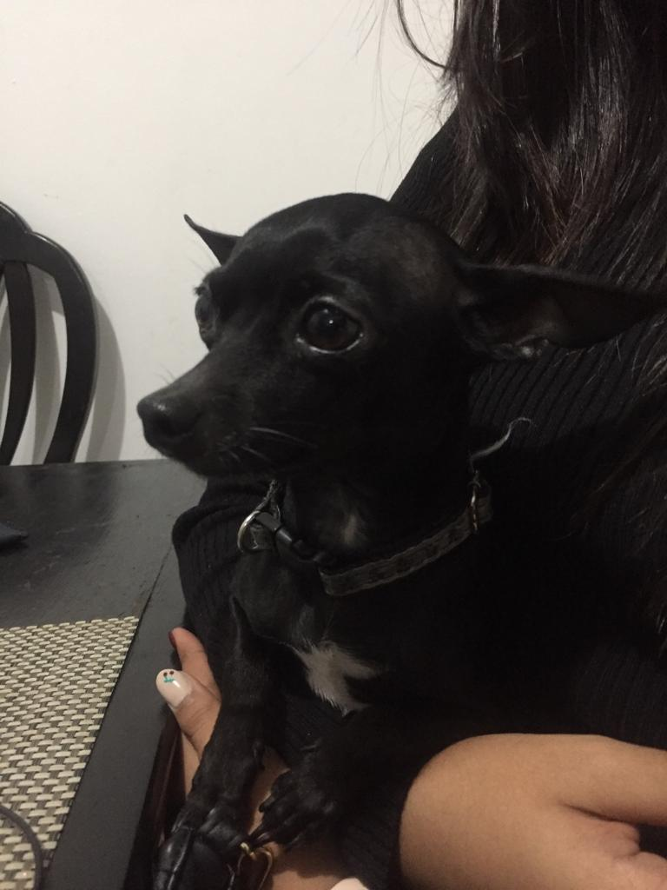
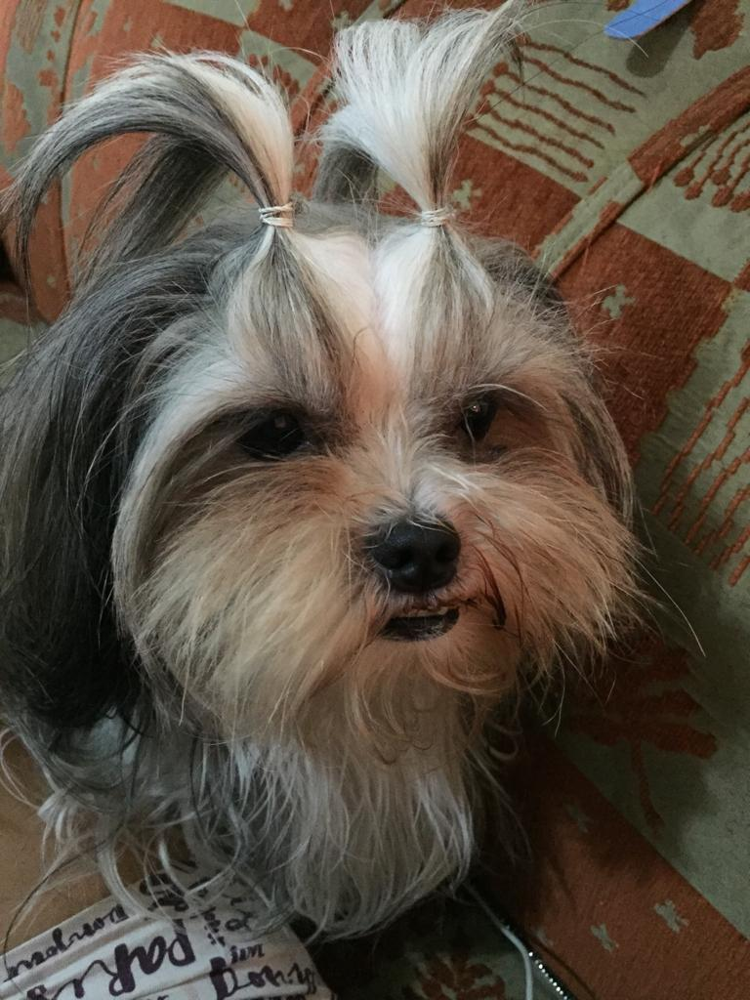
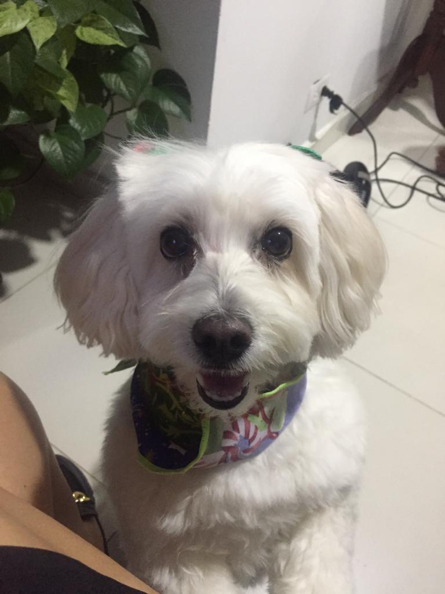
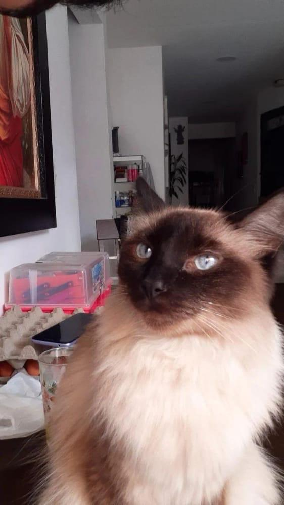

BIENVENIDOS A MI BLOG
Este blog esta creado para mi clase de HTML y en el momento les mostrare cuales son las mascotas que tienen mi familares y las que yo tengo y las historias de como llegaron a nuestra vidas, que edad tiene y sus razas
Crecimiento de Zeus
Zeus con 1 año
Zeus con 3 años
estos pequeños no son solamente nuetras mascotas, sino que nuestra familia y compañeros hasta que su camino con nocotros finalice

Oso

Kiara

Iris
